5 Star Plumbing, Heating & Air — and 5 Star Water & Ice — Hemet, California
You run two businesses out of Hemet. 5 Star Plumbing, Heating & Air has twenty-five years in the trade, a 4.8 on Google and two yards covering the valley and the 215. 5 Star Water & Ice, on East Florida Avenue, has been an LLC since October 2024. This proposal covers one thing for each, and they are deliberately different things. The plumbing business gets a website — already built, link below. The water store gets an app, not a website. A store people drive to does not need a brochure site; it needs the thing that keeps regulars coming back, and that is a balance in their pocket. Only the website carries a price here. The app is specified in full so you can decide whether you want it at all before anyone talks about money.
The plumbing business does not have a reputation problem — that is the unusual part. The 4.8 is real and the BBB downgrade is for a single unanswered complaint, not for the work. What it has is a presentation problem: the licence number appears nowhere on the current site, two addresses of record have already split the business across two Yelp listings, and the site does not convert an emergency caller in the ten seconds they will give it.
The water store's problem is different and simpler. Prepaid water runs on paper. Nobody — customer or counter — can say what is left without asking, and every lost punch card is a small argument the store loses on purpose because arguing is worse. An app fixes that by giving both sides the same number.
Seven pages, built and deployed. Open it on your phone — that is where three quarters of plumbing traffic lands. Nothing is charged unless you decide to keep it.
California requires a contractor's licence number on advertising, and a website is advertising. It is also the gate on Google Local Services Ads — the "Google Guaranteed" placement that sits above the map pack, which is the single best position a residential plumber can hold, and verification for it requires a clean current licence plus proof of insurance.
The new site is built to display it and currently hides the badge rather than print a number we could not verify. Send us the licence number and it appears in the footer, on the About page and in the search-engine data automatically.
Read live from public sources on August 3–4, 2026. Nothing here is modelled or estimated, and §10 lists what could not be verified rather than guessing at it.
| What we checked | What is there now | Assessment |
|---|---|---|
| Google rating | 4.8 across 54 reviews | Strong |
| Licence number on the website | Not present anywhere | Required by law |
| Address of record | Two — Tanya Ct 92542 on your site, Tanya Ave 92545 at BBB | Splitting you |
| Yelp | Two separate listings, one per address | Reviews divided |
| BBB | B−, not accredited — for one unanswered complaint | One week's work |
| Emergency conversion path | Contact form; phone number not the primary action | Costs after-hours calls |
| Spanish | "Se habla español" stated; site is English only | Opportunity |
| Water store online | Facebook and Instagram only | Fine for now — see below |
| Water store prepaid system | Paper, by all appearances | Unmeasurable |
Two addresses have already produced two Yelp listings, which means whatever reputation the second one collects never reaches a customer looking at the first. It gets worse if it is not settled soon: Google will not verify a second Business Profile at a second address for the same business, and picking the wrong one to build on is expensive to undo once reviews have accumulated against it.
This is a two-minute decision that has to happen before anything else. Which one is the real business address? Everything — the site, the Google profile, the Yelp consolidation — keys off that answer.
The B− is specifically for "failure to respond to 1 complaint." It is not a judgement on the work. Answering that one complaint is roughly a week of back-and-forth and very likely restores the A, at which point it stops being something to hide and becomes a badge worth putting on the site next to the licence number. We do not currently display the BBB grade anywhere, for that reason.
What is genuinely good, and why it matters
Twenty-five years in the trade, a 4.8 on Google, plumbing and HVAC under one roof, two yards, and Sunday closed for God and family. That last one is not a marketing line — it is the kind of detail that makes a local business feel like a person instead of a franchise, and the new site leads with it rather than burying it. None of the work proposed here is repair. It is putting a good business where people can find it.
Rather than describe a website, we built it. Seven pages, deployed, working on a phone. Open it before you read the rest of this section: five-star-plumbing-eight.vercel.app
| Today | The new site | |
|---|---|---|
| Licence number | Nowhere | Footer, About page and search data — one edit away |
| Emergency at 9pm | Contact form | Call bar, live dispatch status, triage that says dial |
| "Do you serve my town?" | A list of four cities | ZIP checker, tiered, 21 towns mapped |
| Two trades | Two menus | One company, one invoice — stated as the argument it is |
| Trust signals | "25+ years" | Rating with its review count and the date it was verified |
| Water store | Unmentioned | Named, with address and phone, on the plumbing site |
No stock photography. Nothing on the site pretends to be a photo of your crew, your truck or your work — a smiling model in a clean uniform reads as exactly what it is, and customers in this trade are unusually good at spotting it. Send real job photos and a portrait of you and the site improves considerably; the service and About pages have obvious homes for them.
No invented statistics either. Every number on the site traces to a source we recorded, and anything we could not verify — your Yelp rating, the BBB grade — is simply absent rather than approximated.
Four things must be settled before it goes on your domain
The licence number · which address is the real one · where booking-form submissions should be sent · your actual office hours, of which only the Sunday closure is sourced. All four are single edits on our side. None require you to do anything technical.
And it is not a website
We are not proposing one for the water store, and would talk you out of it if you asked. Nobody researches where to refill a five-gallon bottle; they go to the one near them and they keep going until something makes them stop. A website does not change that. What changes it is being the store the customer has already paid, with a balance they can see.
The store sells water two ways: by the gallon at the counter, and — for regulars — in bulk that gets drawn down over weeks. The second one runs on memory and punch cards. That produces four small frictions, and they are all the same missing thing.
| The friction | What it costs |
|---|---|
| The balance lives in a drawer | Cards get lost, soaked, left in the other car. Staff give the customer the benefit of the doubt, which is the right call and a slow leak of revenue. |
| Nobody buys a second block on purpose | Customers discover they are empty at the counter with the bottles already in the cart — the worst possible moment to be sold a hundred-gallon pack. |
| Regulars are invisible until they stop coming | No way to know a weekly customer has not been in for a month. The first signal is an empty till, by which point they have found another store. |
| The cash flow runs backwards | Pay-per-fill means the store carries filtration, power and rent, then collects three dollars at a time. Prepaid blocks flip that — money first, water after. |
An app is only worth building if it fixes all four at once, which it does, because each is a symptom of one thing: there is no balance both sides can see.
A customer buys a block of gallons or joins a monthly plan. From then on, the number in their pocket and the number at your register are the same number. At the counter they show a code; your staff scan it on a tablet and type the gallons drawn. Both balances update at once and a receipt lands in their history immediately.
Phase one needs no new hardware and changes nothing about how you dispense water. One tablet at the counter is the entire equipment list. Self-serve at the machine is a later phase and depends on what your dispenser's manufacturer allows.
There is no price on the app in this document, deliberately. Five answers change the size of the build materially — they are listed in 5.12 — and quoting before you have given them would mean either padding the number to cover the unknowns or revising it upward later. Read the specification, tell us what is in and what is out, and we will price the version you actually want.
One thing your brief conflated, and it matters
"How much water they bought" and "what is left on their membership" are two different balances with different rules. Gallons bought are stored value — permanent, they do not reset. A membership allowance refreshes every month and does not roll over. A customer can hold both, and the app always draws the perishable one first and shows them which bucket empties next. Treating these as one number is the single most likely way this product goes wrong, so it is designed with them separate from the beginning.
This is the complete specification, included so you can see exactly what is being agreed to before any money changes hands. It is also the document a developer builds from — there is no second, more detailed version held back.
| Measure | Why it matters | By day 90 |
|---|---|---|
| Enrolled customers | Worthless without the regulars on it | 150 accounts |
| Share of fills scanned | Whether staff use it under pressure | 70% |
| Prepaid share of water revenue | The cash-flow reason this exists | 35% |
| 30-day repeat rate | Balance visibility should pull people back | +10 points |
| Top-ups made before hitting zero | Proves the low-balance nudge works | 50% |
| Seconds added per transaction | The guardrail. Breach it and we simplify, not add | under 8 |
Today's baselines are unknown — the store has no digital record of repeat rate or revenue mix. Phase zero exists to measure them before anything is built, so these are compared against something real instead of a guess.
That first profile makes large type, high contrast, full Spanish and a login with no password functional requirements, not polish. Sign-in is a phone number and a texted code — no email a seventy-year-old has to remember, nothing to forget.
Out of habit, or from a low-balance notification. Sees 62 gallons left and 18 days on the plan.
Buys a hundred-gallon block from the couch because it is cheaper per gallon — the sale you currently never make.
A code appears. Valid five minutes, good for one transaction, and it works with no signal in the store.
Tablet reads the code, staff taps the gallons and the water type. Two taps. No lookup, no spelling a name.
Balance drops on both at once. Receipt in their history immediately, with the amount, the time and which staff member entered it.
Everything else in this app is a solved problem. This one decision sets the cost and the timeline, so here are the three options honestly.
| Option | How it works | Hardware | Verdict |
|---|---|---|---|
| A · Staff-scanned | Customer shows a rotating code; staff scan it and enter the gallons. | One tablet (~$180 if you do not already have one) | Phase 1 |
| B · Machine-integrated | Customer scans at the dispenser and the machine meters the draw against their balance. | A controller tapped into your existing dispenser | Phase 3, after a survey |
| C · Physical card | An RFID card carries the account; the app just displays it. | Card printer and readers | Rejected |
Option B is the one everyone wants and it is the one nobody can price honestly without knowing your dispenser's make and model — it could be a weekend of work or it could be impossible, depending entirely on what the manufacturer exposes. We are not quoting it in this proposal. Option C reintroduces exactly the object we are trying to eliminate.
Twelve screens make up version one — ten for customers, two for staff. These are specification designs at real device proportions: the layout, hierarchy and wording are what is being agreed. Every price and gallon count shown is a placeholder until you give us yours.
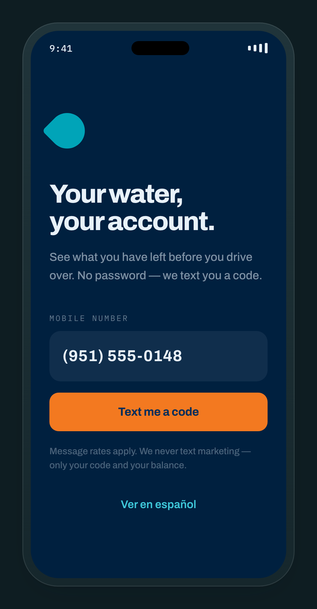
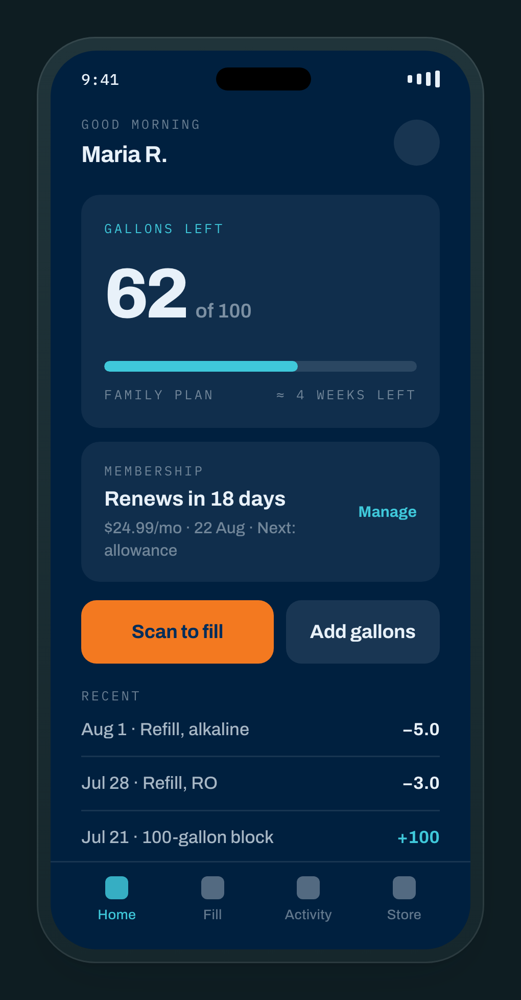
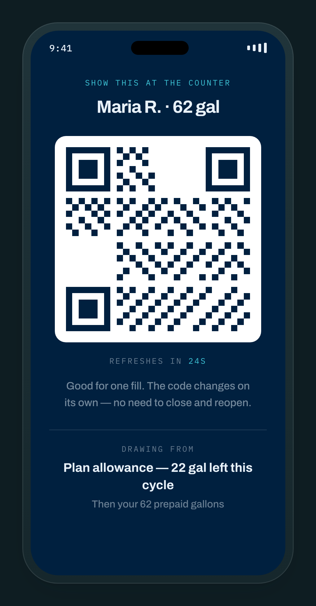
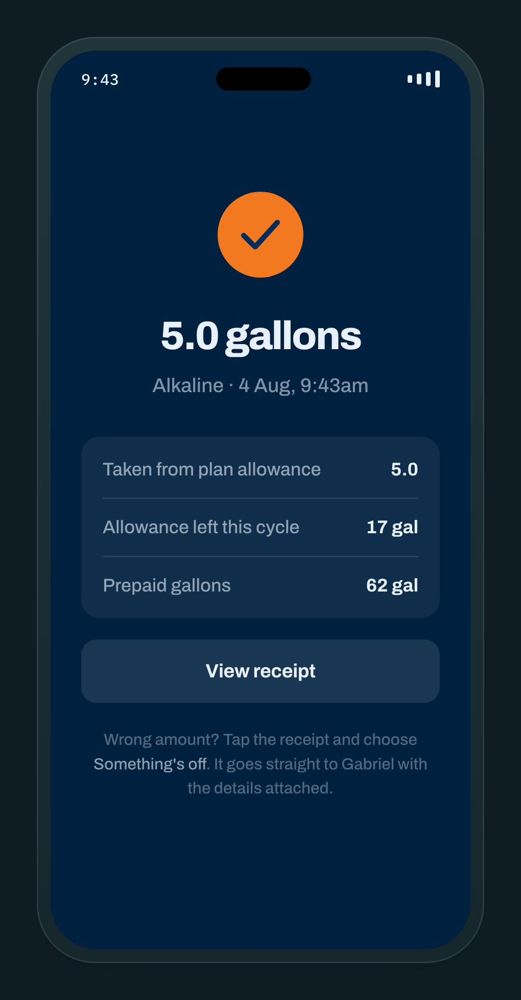
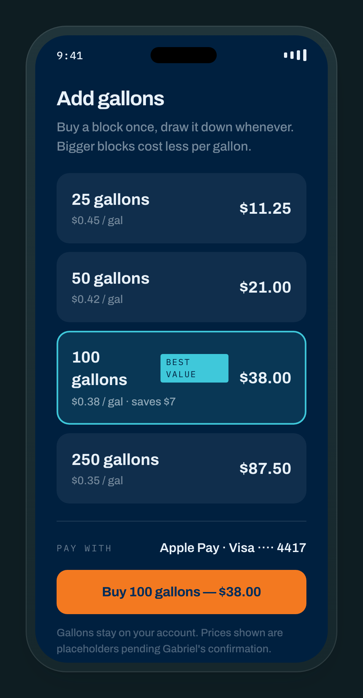
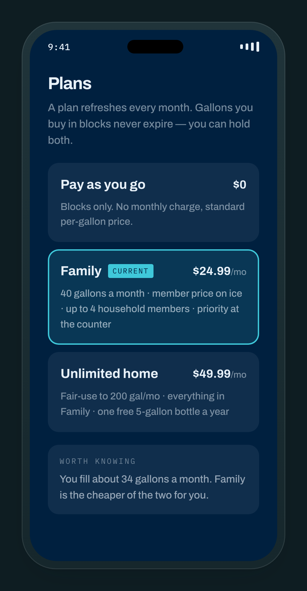
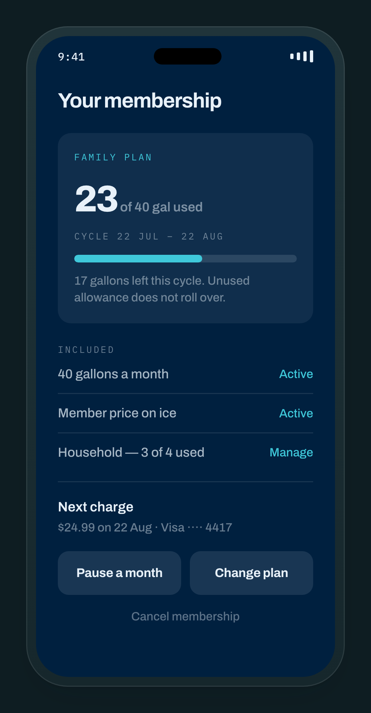
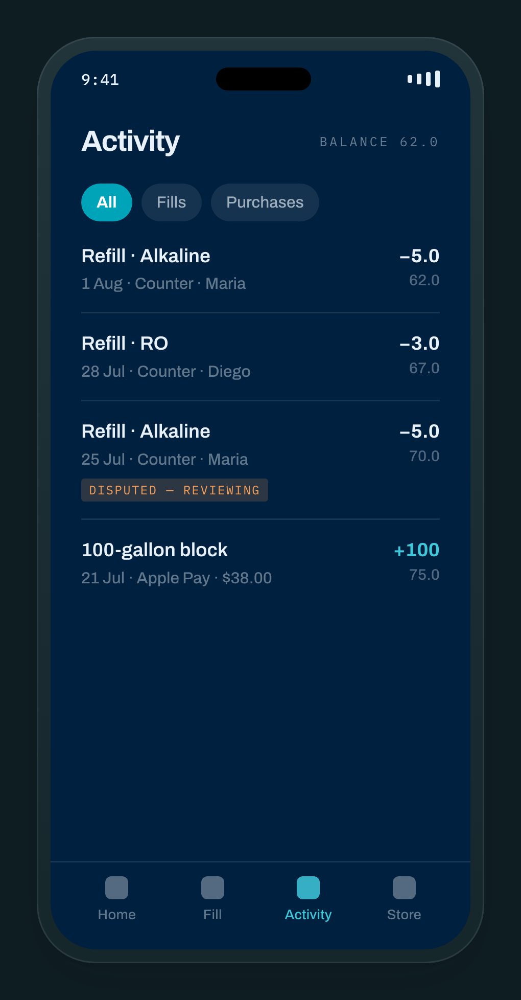
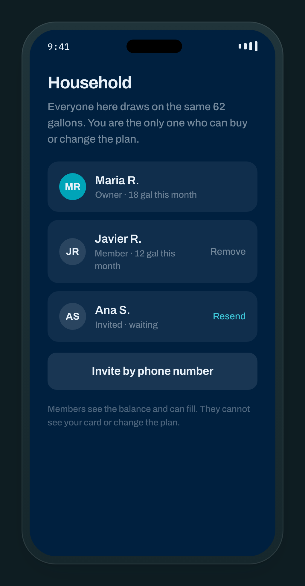
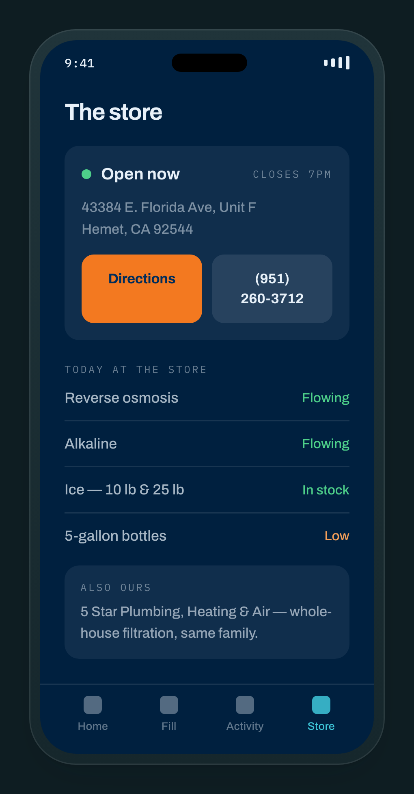
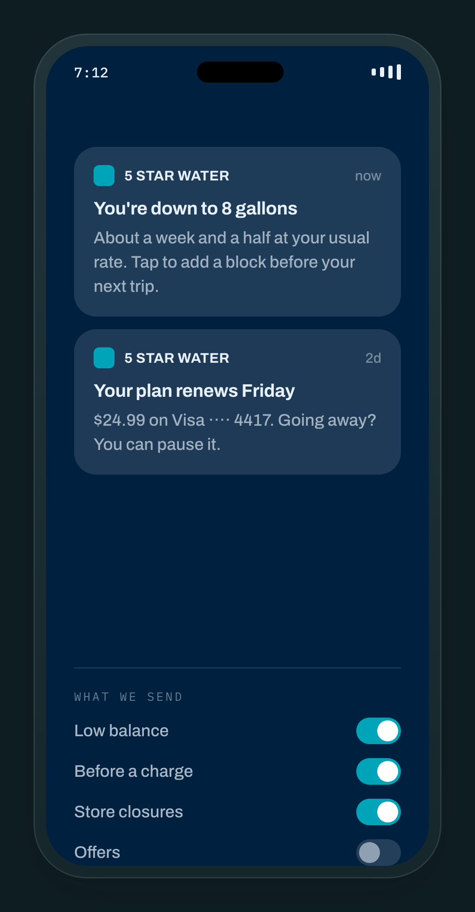
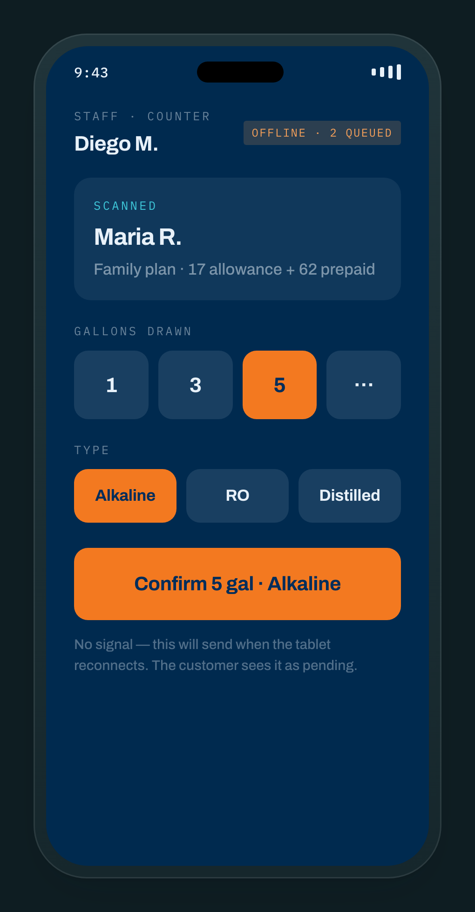
Specified in writing but not drawn: your owner dashboard (daily gallons, prepaid balance owed, plan churn, dispute queue), the profile screen, and the receipt detail view.
The balance is never a number sitting in a field that gets overwritten. It is the running total of a permanent, append-only record of every credit and every draw. This is the one technical decision in this document that should not be negotiated, because every serious way this could fail — a double charge, a lost offline fill, a dispute nobody can reconstruct — is a symptom of a balance that can be overwritten.
A correction is a new entry, never an edit. The history is what you and the customer both look at, so it has to be the truth including the mistakes. If the displayed number ever drifts, it can be rebuilt from the record exactly.
| Record | What it holds |
|---|---|
| Customer | Phone, name, language. Phone is the identity — no email required, no password stored anywhere. |
| Household | Owner, members, invitations. Up to four people on one balance. |
| Plan & subscription | Name, price, monthly allowance, perks, cycle dates, status. Price changes never rewrite existing subscriptions. |
| Ledger entry | Every ± gallon movement with its bucket, reason, who did it, and a unique key that makes a retry harmless. Append-only. |
| Fill | Water type, staff member, store, device, and status: pending, posted, disputed or reversed. |
| Purchase | The Stripe payment and the gallons it bought. Gallons credit only once the payment actually succeeds. |
| Dispute | Reason, who raised it, resolution. Resolving writes a new correcting entry; the original stays visible. |
Card payments run through Stripe. Card numbers never touch your systems — Apple Pay, Google Pay and saved cards are all handled inside Stripe, which keeps your compliance obligation to a short self-assessment rather than an audit. Subscriptions use Stripe's billing, so failed-card retries and receipts are not something we hand-build and can get wrong.
Selling water up front creates a balance the customer owns. Depending on how the packs are worded, that can be treated like a gift certificate — and in California those generally cannot carry an expiry date, small remaining balances may be redeemable in cash, and dormant accounts can raise unclaimed-property obligations.
This is inexpensive to get right at the start and expensive to retrofit after a thousand customers hold balances. Have a California attorney read the pack terms before the first sale. Until told otherwise we build assuming gallons never expire, which is the conservative default.
| Requirement | The standard |
|---|---|
| Spanish, in full | Every word, including receipts, notifications and the staff app. Half-translated is worse than English-only. |
| Legible for your actual customer | Large minimum text, high contrast, works at the biggest accessibility text size, large touch targets. |
| Works without signal | Fill code generates on the phone. Last balance cached and stamped with when it was fetched. Staff app queues and shows the depth. |
| Fast where it counts | Balance visible within 1.5 seconds on a four-year-old phone. Scan to confirmed fill under 3 seconds. |
| Private by default | Phone numbers never shared or sold. No location tracking. No third-party trackers. |
| Recoverable | Continuous backup with point-in-time restore. A lost phone costs one text message; no balance lives on the device. |
| Capability | Phase | Considered done when |
|---|---|---|
| Phone sign-in with a texted code | 1 | A new customer reaches their balance in under a minute with no help |
| Gallon balance and permanent record | 1 | The balance always equals the record, and a rebuild matches to the gallon |
| Rotating fill code | 1 | Works offline, expires in five minutes, cannot be used twice |
| Staff scan and redeem | 1 | Typical redemption under eight seconds, measured at your counter |
| Buying a gallon block | 1 | Apple Pay credits the balance within two seconds |
| Activity and receipts | 1 | Every entry shows amount, running balance, staff member and time |
| Spanish | 1 | No English text reachable in Spanish mode, receipts included |
| Your owner dashboard | 1 | Daily gallons, prepaid liability outstanding, disputes waiting |
| Memberships and allowances | 2 | Allowance draws first, resets each cycle, pause works without a phone call |
| Household sharing | 2 | Up to four people on one balance with per-person attribution |
| Low-balance notifications | 2 | Fires on their usage rate, not a fixed number |
| Disputes | 2 | One tap from a receipt; resolution writes a correcting entry |
| Store status board | 2 | Staff flip a product to Low or Out in two taps and customers see it |
| Referrals | 3 | Both sides credited in gallons, not dollars |
| Self-serve at the machine | 3 | Only after the dispenser survey in 5.5 — not quoted here |
| Delivery scheduling | 3 | Only if you want to run routes; needs its own scoping |
| Risk | Why it is plausible | What we do about it |
|---|---|---|
| Staff stop scanning | Busy counter, old habit, one more thing to do | Fewer taps than the paper card, and the scan is the only route to the discount — so customers enforce it for you |
| The balance drifts from reality | Offline queues, retries, manual corrections | Append-only record, single-use codes, and a nightly reconciliation against your till that alerts on any variance |
| Older customers will not install it | Real, and they are the core segment | Paper cards keep working. The app is an addition, not a replacement — nothing is taken away, and staff can sign someone up at the counter in a minute |
| Prepaid becomes an untracked liability | Cash arrives early, water is owed later | Outstanding gallons shown on your dashboard as a liability from day one |
| Expiry terms turn out to be unlawful | California stored-value rules are strict | Non-expiring by default, plus the attorney review in 5.8 before the first sale |
| App store review friction | First submission, and stores have rules about physical goods | Physical goods sold through your own payment rail are permitted. We budget two review cycles rather than one |
Nothing else can be finalised without these. Everything above is written to hold whichever way they land, but the first two block the build.
Rather than estimate what you are losing, here is the hurdle in the other direction: what each piece has to produce to pay for itself. If it clears that, everything above it is profit.
At a $450 average ticket, the site and its care plan pay for themselves at roughly one extra job a month — and that is before the licence number unlocks Google Local Services Ads, which is the placement that actually moves emergency volume for a residential plumber. Being absent from a customer's shortlist at 9pm costs a job whether or not anyone ever counts it.
An app like this is not justified by selling more gallons. A water-store regular spends something in the region of twenty dollars a month, so no realistic bump in volume across a couple of hundred customers pays for custom software on its own. If someone tells you otherwise they are selling you something.
What justifies it is keeping the customers you already have. Regulars drift — they get a countertop filter, they try the store closer to work, they simply get out of the habit — and today the first you know about it is an empty till. A balance sitting in their pocket, a nudge before it runs out, and money already spent with you are all retention mechanics, and retention compounds in a way extra gallons do not. The second effect is cash: prepaid means money arrives weeks before the water leaves, which is a permanent improvement to your working capital rather than a monthly gain.
We have not put a payback model in this document, because a payback model needs a price and a price needs the answers in 5.12. Once we have those, the honest version of this section is one page of arithmetic using your own numbers — what a regular actually spends, how many drift in a year, and what share of them a balance would hold. If that arithmetic does not work, we will tell you so rather than build it.
Only the website is priced here. It exists, you can open it, and the number covers finishing and launching it properly. Nothing has a contract to sign and nothing is due today.
Already built and live. The fee covers the build, the four launch items settled, your domain pointed at it, the Google Business Profile created and verified on the correct address, and the duplicate Yelp listings consolidated.
Hosting, security, backups, edits when your hours or services change, and the Google profile kept current. Month to month, thirty days’ notice, cancel any time.
The app is not priced in this document
Section 5 is a specification, not a quote. Five answers change the size of the build materially — pack pricing, whether gallons expire, what shape a membership takes, your dispenser, and whether the store has wifi. Quoting before you have given them would mean padding the number to cover the unknowns, or revising it upward later. Neither is a good way to start.
Read section 5, mark what you want in and what you want out, and we will price that version. Reading it costs you nothing and commits you to nothing.
Most of this is a short phone call. None of it is technical.
Pack pricing and the expiry decision block the build. The other three change details, not direction.
Seven pages live at the preview link, tested on desktop and phone. Built before this proposal so you could judge it instead of imagining it.
Licence number, address decision, hours and form destination applied. Domain pointed. Google Business Profile submitted for verification — that step runs on Google's clock, usually a postcard, typically one to two weeks.
Duplicate Yelp listings consolidated, name/address/phone made identical across every directory that carries you, BBB complaint answered if you want it in scope.
Nothing customer-facing, and nothing billed. We record what the store does today so the targets in 5.2 are compared against something real rather than a guess. Cheap, useful even if the app never happens, and it runs in parallel with the website work.
Indicative only — the schedule firms up once section 5 is marked up and quoted. Customer app, staff app, dashboard, payments, Spanish. Working version to look at around week six, then app store submission — budget two review cycles.
A deliberately small pilot. The risk here is not technical, it is whether staff scan every time when the counter is busy — and twenty customers answers that far cheaper than finding out after everything is built on top of it.
Public launch once the pilot holds: 70% of fills scanned and no balance discrepancies over thirty days. Phase 2 is decided then, with real numbers rather than assumptions.
Everything in section 1 was read directly from public sources on August 3–4, 2026. No estimates, no purchased data. Ratings move; anything acted on should be re-checked first.
| Fact | Source |
|---|---|
| 5 Star Water & Ice LLC, entity #202464216440, active, formed 16 October 2024, Gabriel Reyes manager | California Secretary of State |
| BBB profile: B−, not accredited, one unanswered complaint, principal Gabriel Reyes | bbb.org |
| Both addresses, both phone numbers, service list, Sunday closure, "se habla español" | plumbinganddrainsolution.com |
| Google 4.8 across 54 reviews | Read 30 July 2026 — re-check before relying on it |
| Water store address, phone, email, social accounts | State filing and the store's own Facebook and Instagram |
This proposal is valid for thirty days from the date above.
To proceed, reply with one line saying which you are taking. That is the whole process — no contract to redline, nothing to sign, nothing due today.
There is no option here that costs you anything to choose. The app quote follows the conversation; it does not precede it.
Website billing starts at the kickoff call, invoiced in halves. Monthly fees are month to month, thirty days’ notice, cancel any time.
Everything created under this agreement belongs to you — the website, the app, the source code, every listing and login and profile. If we part ways it all stays with you and we hand over access in full. No lock-in, and nothing built here is rented back to you.
Ready when you are
Leo Lebel · Circuit Coders · leo@circuitcoders.com
If you only do one thing this month, get the licence number onto your advertising. That one is not
about us.